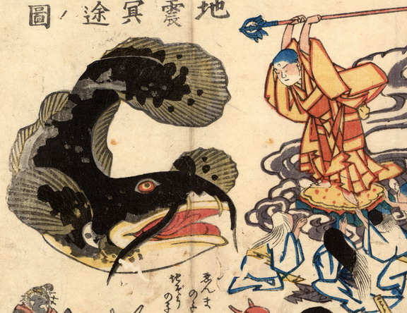

大きな鯰が、口を開き、尾びれをあげている。それにむかって地蔵が錫杖を振り下ろそうとしている。
出典：親書誌：U426_nichibunken_0170：地震冥途ノ図；ジシンメイドノズ／日付：2010／資源識別子：U426_nichibunken_0170_0001_0000
Copyright (c)2010- International Research Center for Japanese Studies, Kyoto, Japan. All rights reserved.